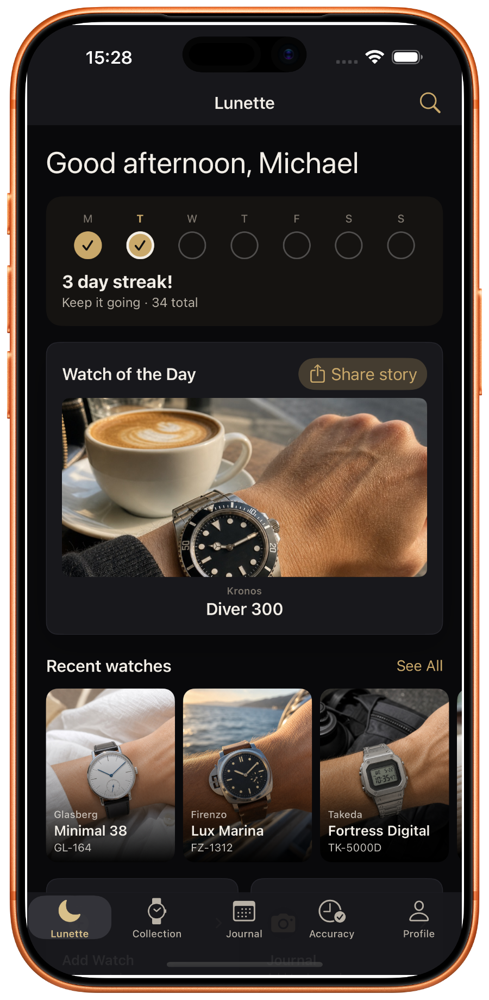
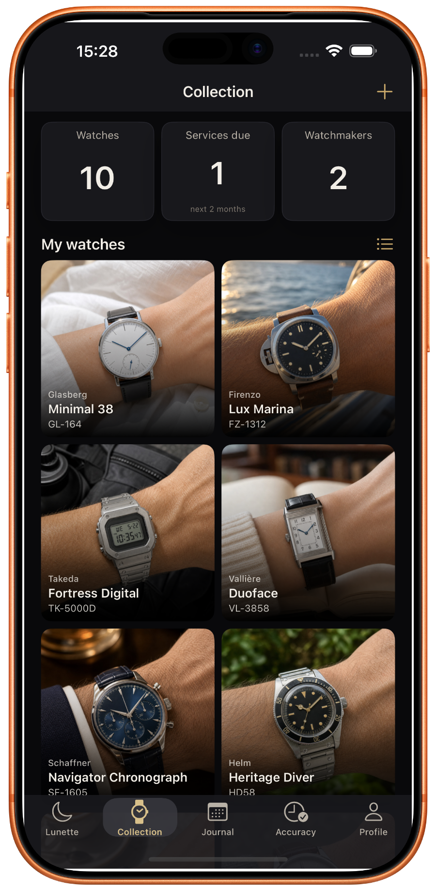
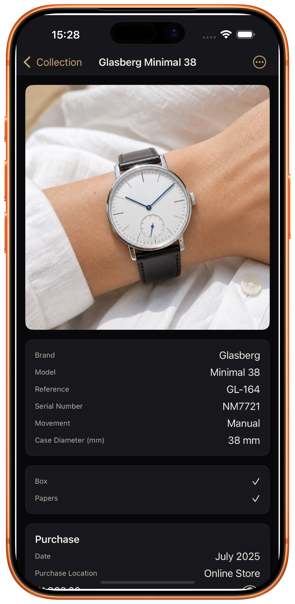
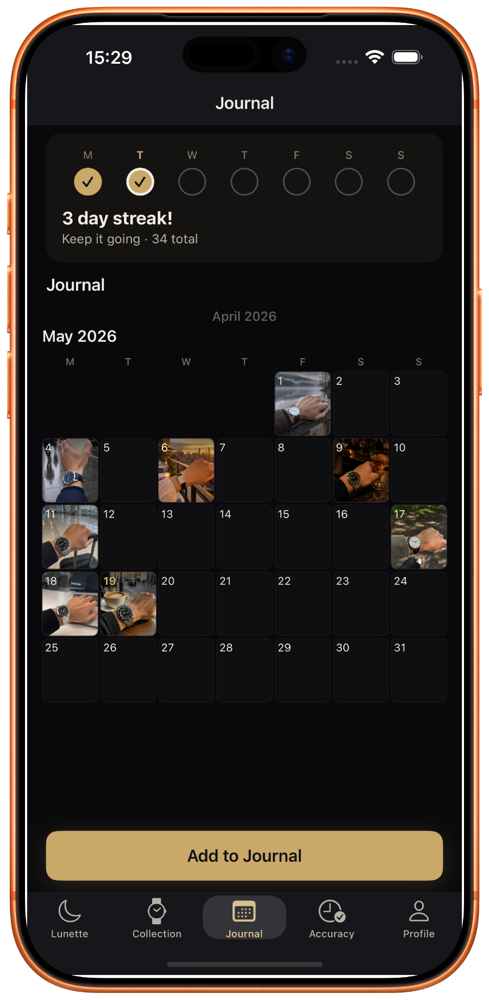
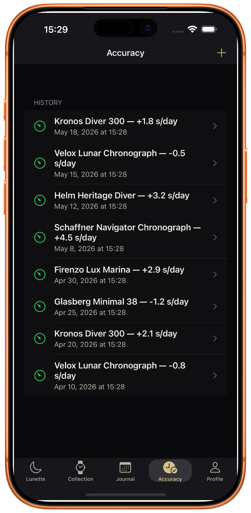

Your collection,
daily.
Document provenance. Track accuracy to the second. Turn every wrist check into a memory. No accounts. No subscriptions. Yours.

Every timepiece, one place.
Reference, serial, movement, case size, box, papers, photos, documents, purchase history. A single source of truth for insurance, resale and personal satisfaction.

One card per watch.
Movement specs, case diameter, purchase records, service history and high-resolution photos. Everything you'd want if you sold it tomorrow, or kept it forever.

A diary of what you wore.
Daily photo capture with geolocation, calendar view, streaks and a map of everywhere your watches have been. Every wrist check becomes a memory.

Drift, measured.
Seconds-per-day accuracy synced against atomic time servers. No timegrapher needed. Session history lets you track how each movement performs over months.

How it's built.
Offline-first
No server means no shutdown day. Your archive outlives any company — including us. iCloud backup is optional and encrypted.
Zero tracking
No analytics. No telemetry. Your watch data never leaves your device. We couldn't see your collection if we tried.
One-time purchase
Free up to 5 watches, every feature included. Pro is a single payment — no renewals, no price bumps. Yours forever.
Watch of the Day
Pick your daily wear. Lunette creates a ready-to-share story — no templates, no design work.
Service history
Every service, logged. Dates, costs, watchmaker contacts — so the next owner knows exactly what they're getting.
Crafted palettes
Gold, champagne, blue, green — dark and light modes designed for the watches, not the UI.
Start documenting.
Your watches deserve a proper archive.
Start with the ones that matter most.